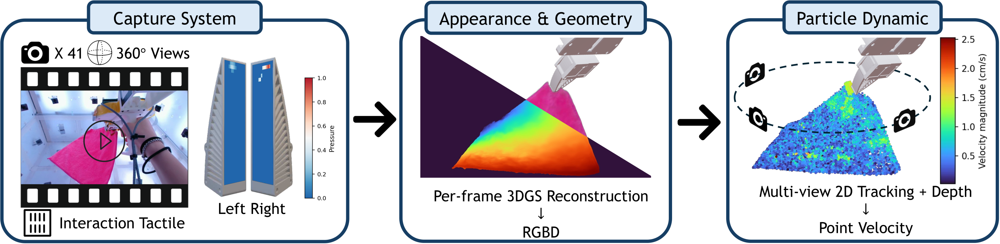

Executive Summary
로봇 학습 데이터는 오래 눈만 있고 손끝이 없었습니다. 카메라 영상은 넘쳤지만, 손이 물체에 닿는 순간의 저항과 미끄러짐은 대부분 기록되지 않았습니다. 브라운·컬럼비아·MIT 공동 연구팀이 ECCV 2026에서 공개한 Deform360은 그중에서도 가장 어려운 대상을 골랐습니다. 천, 로프, 케이블, 곰인형처럼 쥐는 동안 형태가 계속 바뀌는 변형 물체입니다. 이 글은 그 데이터셋이 무엇을 채웠고, 로봇 학습 데이터 설계에 어떤 질문을 남기는지를 봅니다.
규모의 핵심은 41대의 서라운드뷰 카메라와 양팔 촉각 그리퍼로 변형 물체 198개를 215.7시간 기록했다는 점입니다. 여기에 더 중요한 기여가 하나 더 있습니다. 같은 데이터 위에서 로봇 월드모델의 두 표현, 즉 2D 비디오 방식과 3D 파티클 방식을 통제된 조건으로 나란히 비교했습니다. 어느 한쪽이 늘 이기지는 않았습니다. 승자는 데이터 양에 따라 갈렸습니다.
이 결과는 로봇 데이터를 다루는 사람에게 실전 질문으로 번역됩니다. 내 학습 데이터가 적다면 구조적 사전지식을 가진 3D 표현이, 많다면 확장성이 좋은 2D 표현이 유리하다는 신호입니다. AI-레디 데이터의 다음 경계가 '못 본 것'에서 '못 만진 것'으로 옮겨가는 흐름을, Deform360은 재현 가능한 벤치마크의 형태로 보여 줍니다.
주요 수치
아래 네 숫자가 Deform360이 무엇을, 얼마나, 어떤 결론으로 담았는지를 압축합니다. 앞 세 수치는 데이터의 규모를, 마지막은 이 데이터로 확인한 핵심 발견을 가리킵니다.
출처: arXiv:2607.05390 · 프로젝트 페이지
198개
변형 물체
1D·2D·3D 형태, 1,980 시퀀스
215.7시간
시각-촉각 기록
약 23.3M 프레임
41대
서라운드뷰 카메라
양팔 촉각 그리퍼와 동기화
3D↔2D
표현 승자 갈림
적은 데이터 3D, 많은 데이터 2D
로봇은 왜 촉각 없이 배워 왔는가
로봇 조작 데이터셋은 오랫동안 카메라 중심으로 만들어졌습니다. 이유는 현실적입니다. 카메라는 값싸고 널려 있으며, 영상은 그대로 저장하면 끝납니다. 반면 손끝의 촉각을 기록하려면 센서를 그리퍼에 붙여야 하고, 그 신호는 카메라보다 훨씬 빠르게 갱신되어 영상과 시간축을 맞추기 어렵습니다. 수집 난이도와 비용, 동기화 문제가 겹치면서 촉각은 오래 데이터의 바깥에 남았습니다.
이 공백은 이미 로봇 연구의 화두가 되어 있습니다. 2026년 상반기에만 ContactWorld, Tactile-WAM, OmniVTA처럼 촉각과 월드모델을 엮은 연구가 잇따라 나왔습니다. 페블러스도 앞서 아지봇(AGIBOT)이 놓침·충돌·미끄러짐 같은 실패 순간의 접촉을 촉각으로 기록한 데이터셋을 다룬 적이 있습니다. 촉각을 데이터로 남기려는 흐름은 이미 최전선에서 진행 중입니다.
그 흐름 안에서 변형 물체는 특히 까다로운 대상입니다. 컵이나 블록 같은 강체는 집는 동안 모양이 그대로지만, 천은 접히고 로프는 늘어지며 곰인형은 눌립니다. 형태가 매 순간 바뀌니 상태를 표현할 자유도가 폭발하고, 재질마다 물리가 달라 하나의 규칙으로 묶기도 어렵습니다. 사람은 눈을 감고도 손끝 감각만으로 수건을 갤 수 있지만, 그 감각을 지우면 같은 동작이 위태로워집니다. 변형 물체를 다루는 로봇에게 촉각이 빠진 데이터가 유독 얕은 이유가 여기 있습니다.

Deform360이 겨눈 지점이 바로 여기입니다. 아지봇의 데이터가 강체를 포함한 다양한 조작에서 실패의 질감을 담았다면, Deform360은 형태가 계속 바뀌는 변형 물체 한 종류에 집중해 촉각과 3D 형태를 동시에 남겼습니다. 그리고 그 데이터를 어떻게 표현해야 로봇이 잘 배우는지를 정면으로 실험했습니다.
198개 물체·215시간, Deform360의 규모
Deform360은 변형 물체 198개를 대상으로 1,980개의 상호작용 시퀀스를 모아, 총 215.7시간·약 23.3M 프레임을 기록했습니다. 수집 장비는 물체를 둘러싼 41대의 서라운드뷰 카메라와 양팔 촉각 그리퍼입니다. 촉각 센서를 단 두 팔이 물체를 실제로 쥐고 변형시키는 동안, 수십 대의 카메라가 모든 각도에서 그 순간을 함께 담습니다. 시각과 촉각을 이 규모로 같은 물체 위에 겹쳐 기록한 것이 이 데이터셋의 뼈대입니다.
물체는 형태의 차원으로 나뉩니다. 로프·리본·케이블·체인처럼 선에 가까운 1D 물체가 28개, 천·에어백·비닐장갑·랩·택배봉투·버블랩처럼 면에 가까운 2D 물체가 98개, 곰인형·스트레스볼·스펀지·신발처럼 부피를 가진 3D 물체가 72개입니다. 일상에서 로봇이 다뤄야 할 말랑한 물체의 스펙트럼을 형태 기준으로 고르게 훑은 구성입니다.
2.1마커 없이 3D 형태를 복원하는 파이프라인
변형 물체는 표면에 마커를 붙이기 어렵습니다. 천이 접히면 마커가 가려지고, 스펀지가 눌리면 위치가 뒤틀립니다. 그래서 연구팀은 마커 없이 형태를 복원하는 파이프라인을 설계했습니다. 41대 멀티뷰 영상과 촉각 신호를 프레임마다 3D 가우시안 스플래팅으로 재구성한 뒤, 마커리스 2D 추적으로 표면의 대응점을 찾고, 이를 3D로 들어 올려 물리 법칙에 맞도록 최적화하는 순서입니다. 이 캡처-투-모델 과정 자체가 변형 물체 데이터를 어떻게 구조화할지에 대한 하나의 답입니다.

한 가지 정확히 해 둘 점이 있습니다. 논문은 촉각 센서의 구체적인 브랜드명을 밝히지 않고 양팔 촉각 그리퍼로만 기술합니다. 데이터셋 공개 범위와 라이선스 조건도 프로젝트 페이지에서 별도로 확인해야 하는 사항입니다. 이 글은 논문과 프로젝트 페이지에 명시된 사실만 옮깁니다.
2D 픽셀이냐 3D 파티클이냐
Deform360의 가장 큰 기여는 데이터의 규모가 아니라 그것으로 벌인 실험에 있습니다. 로봇이 세계를 예측하는 방식, 즉 월드모델에는 크게 두 갈래가 있습니다. 하나는 화면을 픽셀의 흐름으로 다루는 2D 비디오 모델이고, 다른 하나는 물체를 3차원 공간의 입자 집합으로 다루는 3D 파티클 모델입니다. 어느 쪽이 변형 물체를 더 잘 배우는가. 지금까지는 각 연구가 저마다 다른 데이터와 세팅에서 자기 방식이 낫다고 주장했을 뿐, 같은 조건에서 맞대 본 적이 드물었습니다. Deform360은 같은 데이터로 둘을 통제 비교했습니다.
결과는 한 줄로 요약되지 않습니다. 승자가 데이터 양에 따라 바뀌었기 때문입니다. 물체 하나를 적은 데이터로 배우는 상황에서는 물리 기반 3D 모델(PhysTwin)이 앞섰습니다. 형태 오차를 재는 Chamfer Distance가 0.014로, 학습 기반 모델들의 0.032~0.039보다 낮았습니다. 데이터가 조금 더 늘어난 다중 에피소드 구간에서는 3D 계열의 ParticleFormer가 미래 예측 화질(PSNR 26.288)에서 2D 비디오 모델 Cosmos(24.950)를 앞섰습니다.
그런데 여러 물체를 처음 보는 상태에서 예측하는 제로샷 구간으로 가면 순위가 뒤집힙니다. 2D 비디오 모델 Cosmos가 PSNR 25.042로 앞섰고, 3D 모델은 대규모 사전학습이 부족해 밀렸습니다. 정리하면 이렇습니다. 3D 파티클 모델은 데이터가 적을 때 구조적 사전지식으로 강하고, 2D 비디오 모델은 데이터가 많아질수록 확장성으로 일반화에서 앞섭니다.
이 결과는 데이터를 다루는 사람에게 곧바로 실전 지침이 됩니다. 확보한 학습 데이터가 적다면 구조적 사전지식을 가진 3D 표현을 먼저 고려하고, 데이터를 대규모로 모을 수 있다면 확장성이 좋은 2D 표현이 일반화에서 유리합니다. 데이터의 양이 표현 방식 선택의 1차 변수라는 것, 이것이 Deform360이 남긴 실무적 발견입니다.
실험실 밖에서도 통한 제로샷 조작 계획
벤치마크 점수는 결국 로봇이 실제로 무언가를 하게 만드느냐로 이어져야 의미가 있습니다. 연구팀은 Deform360으로 학습한 PhysTwin을 데이터를 모은 실험실이 아닌 다른 실험실의 처음 보는 xArm 로봇 세팅에 그대로 올렸습니다. 추가 파인튜닝 없이, 천과 로프를 목표한 형태로 조작하는 계획을 세우게 한 것입니다. 결과는 정성적 시연 수준이지만, 파인튜닝 없이 낯선 환경에서 변형 물체 조작 계획이 작동했다는 사실 자체가 데이터의 일반화 가능성을 보여 줍니다.

한계도 분명히 남았습니다. 2D 비디오 모델 Cosmos는 환경이 바뀔 때 외형 차이에 민감해, 이 제로샷 배포 시연에서는 빠졌습니다. 3절에서 본 결론이 여기서 다시 확인됩니다. 이기는 표현은 상황마다 다르고, 어떤 표현을 쓸지는 데이터의 양과 배포 환경을 함께 봐야 정해집니다. 논문도 성공률 같은 정량 지표 대신 예비적 시연이라고만 밝히고 있어, 과장 없이 읽어야 하는 결과입니다.
주목할 점은 데이터셋과 캡처-투-모델 파이프라인을 함께 공개했다는 것입니다. 데이터만 던지면 다른 연구자는 그 위에서 결과를 재현하거나 확장하기 어렵습니다. 수집 장비 구성부터 3D 형태 복원 과정, 그리고 두 표현을 비교한 실험 세팅까지 열어 두면, 촉각과 변형 물체라는 어려운 영역에서 후속 연구가 같은 출발선에 설 수 있습니다.
Editor's Note. 페블러스가 데이터 품질을 '얼마나 많이 모았는가'가 아니라 '무엇을, 어떤 충실도로, 얼마나 재현 가능하게 남겼는가'의 문제로 보는 이유가 여기 있습니다. Deform360은 촉각이라는 빠진 모달리티를 채우는 동시에, 그 데이터를 어떤 표현으로 배워야 하는지까지 통제된 실험으로 열어 보였습니다. AI-레디 데이터의 다음 경계가 '못 만진 것'으로 넘어가고 있음을, 재현 가능한 벤치마크의 형태로 짚은 사례입니다.
(주)페블러스 데이터 커뮤니케이션팀
2026년 7월 29일
참고문헌
핵심 논문
- 1.Li, H. et al. (2026). "Deform360: A Massive Multi-view Visuotactile Dataset for Deformable World Models." ECCV 2026.
관련 연구 — 촉각·월드모델
- 2.Zhang, Z. et al. (2026). "ContactWorld: What Matters in Vision-Tactile World Models for Contact-Rich Manipulation." arXiv:2606.13877.
- 3.Wu, S. et al. (2026). "Tactile-WAM: Touch-Aware World Action Model with Tactile Asymmetric Attention." arXiv:2606.26663.
- 4.Zheng, Y. et al. (2026). "OmniVTA: Visuo-Tactile World Modeling for Contact-Rich Robotic Manipulation." arXiv:2603.19201.
- 5.Higuera, C. et al. (2026). "Visuo-Tactile World Models." arXiv:2602.06001.
- 6.Liang, L. et al. (2023). "Robo360: A 3D Omnispective Multi-Material Robotic Manipulation Dataset." arXiv:2312.06686.